Je viens de terminer mon entretien au FabLab BEN et ils m’ont acceptée en stage chez eux !!
Je suis trop contente, j’avais tellement peur de ne rien trouver… Quel soulagement !
Mais qu'est-ce qu'un FABLAB me direz-vous ?
Un FabLab est un atelier collaboratif ouvert à tous, équipé de machines numériques (imprimantes 3D, CNC, etc.) pour inventer, créer et prototyper.
Le FabLab BEN (Bordeaux École Numérique), mêle formation, projets associatifs et animations pour le quartier.
Tout a commencé quand j’ai posté mon CV sur LinkedIn le 15 octobre.
Coup de chance : un étudiant en Master 2 mécatronique à Ynov, en alternance là-bas, a réagi à mon post.
Trente minutes plus tard, la trésorière de l’association m’a carrément écrit pour me proposer une entrevue.
Franchement, j’étais stressée : je pensais que le trajet serait compliqué car ils étaient à Bègles.
Mais bonne surprise : ils ont récemment déménagé à Grand Parc, au 19 rue Louis Geandreau, 33000 Bordeaux, à seulement 15 minutes à pied de mon campus !
Lors de ma visite aujourd’hui, le lieu était encore en travaux mais on sent déjà le potentiel.
C’est super grand, environ 150 m² sur deux étages ! J’ai hâte de voir à quoi ça ressemblera une fois fini.
Et devinez quoi ? On m’a déjà expliqué mes futures missions :
je vais accompagner des enfants de 8 à 14 ans sur des petits projets de mécatronique :
programmation, modélisation, électronique… tout y passe !
Au début, je vais surtout observer comment se déroule le premier projet (il démarre en janvier),
puis je pourrai animer mon propre atelier ! J’ai trop hâte : il y a tellement de machines ici 🤩
Je vous ferai un post spécial pour vous montrer tout ça dès que j’aurai été formée dessus !
24 octobre 2025
📅 Mon premier jour au FabLab BEN – Makers Juniors
Dates et contexte
Mon stage au FabLab BEN se déroule du 11 janvier au 28 juin. Pas d’ateliers pendant les vacances scolaires,
et chaque samedi matin, de 11h à 12h30, nous animons les Makers Juniors.
L’équipe projet
Je suis encadrée par Edwinn, alternant et animateur, qui sera mon référent pour ce projet ainsi que par Marc, le directeur et fondateur du FabLab.
Le master 2 qui s’occupait du projet auparavant est parti, donc je prends un rôle assez actif dès le début !
Le public
Environ 7 enfants participent au groupe (tous des garçons 😅). En tant que seule fille, j’ai eu droit à quelques
taquineries gentilles, mais mon intégration s’est très bien passée. Edwinn m’avait briefée sur les différents profils,
et j’ai pu les observer dès cette première séance.
Le projet : une station météo
On va construire ensemble une station météo avec plusieurs composants :
🌡️ DHT11 : capteur de température et d’humidité
⬆️ BMP280 : capteur de pression et de température
💡 Photo-résistance : capteur de luminosité
🖥️ Carte Arduino Nano : microcontrôleur
Objectif de la séance
Pour cette première séance, on commence par un choix ludique : chaque enfant sélectionne sur boxes.py la boîte qui
contiendra sa station. Ensuite, on vérifie ensemble les dimensions et la présence d’un couvercle (indispensable !).
Prochaines étapes
La prochaine fois, nous découvrirons les composants un par un, en commençant par le DHT11.
On fera d’abord un prototype virtuel sur Tinkercad, puis un prototype réel sur breadboard.
Ça promet d’être hyper intéressant !
Je crois que moi aussi je suis une enfant au final 😄
Quand j’ai passé mon entretien, j’avais croisé beaucoup de monde au sein de l’association,
mais je ne savais pas encore que l’équipe changerait assez vite. En janvier, j’ai surtout côtoyé quatre personnes régulières :
Marc Fontaine, le directeur du FabLab BEN
Bénédicte Fontaine, sa femme et trésorière de l’association
Edwinn Baudrier, alternant animateur et référent du projet Makers Juniors
Morgane Guenois, alternante en communication
Au début, je ne faisais que les samedis (de 9 h à 12 h30 et de 14 h à 17 h30).
C’est seulement avec le temps que j’ai découvert que les locaux étaient partagés… avec une association appelée
La Fourmilière, qui promeut le bénévolat et l’inclusion à Grand-Parc.
Juste à côté, il y avait aussi une salle utilisée pour des ateliers couture, c’était génial de voir ces différents univers coexister.
Les machines qu’on utilise
Je n’ai pas encore exploré tout l’étage, mais en bas, il y a une machine impressionnante :
une découpe laser EKO 14, avec son interface LightBurn (ils favorisent les logiciels libres et open source).
Côté impression 3D, on utilise des Creality pour les modèles classiques (les anciennes Ender),
et plutôt des FLSUN (comme la V400 ou V400 Max) pour les pièces volumineuses et rapides — ces machines sont des imprimantes Delta très rapides, capables d’atteindre jusqu’à 400 mm/s tout en maintenant une bonne qualité grâce à un extrudeur direct-drive et un firmware Klipper préinstallé.
Il y a aussi une petite découpeuse laser Xtool, parfaite pour faire découvrir aux enfants les bases en toute sécurité.
Et des CNC, dont une que Marc a customisée pour la transformer en machine à dessiner. Le processus est fascinant :
Choix d’une image simple sur Internet — plus elle est détaillée, plus le dessin est long
Vectorisation avec Inkscape
Import dans Easel (en ligne) pour ajuster paramètres (taille, profondeur)
Export du G-Code
Envoi à la machine via un logiciel, et la machine trace l’image
Pour ce qui est de la modélisation 3D : on utilise Tinkercad, accessible en ligne et très visuel, parfait pour les enfants (assemblage de surfaces creuses et pleines, purement ludique).
Pour des projets plus poussés (avec des adhérents par exemple), on passe à des outils comme Rhinoceros 3D ou FreeCAD, plus techniques et puissants.
31 janvier 2025
Hors les murs : animations et premières interventions
Cité du DORAT, Bègles
Après le dernier atelier stations météo du 15 mars, j’ai pu découvrir une autre facette du FabLab :
les interventions à l’extérieur.
Hier et aujourd’hui, nous sommes partis à Bègles, au centre DORAT, avec Edwinn en superviseur.
L’objectif : faire découvrir aux enfants la “drawing machine” et l’imprimante 3D Creality.
Au programme de 14h à 17h :
Démonstrations et explications des machines
Accompagnement des enfants sur leurs propres créations
Réponses aux questions et aide à la prise en main
C’était un vrai défi de sortir du cadre habituel et de gérer un nouveau public dans un temps limité.
Mais ça m’a beaucoup plu : la curiosité des enfants et leurs réactions émerveillées face à la machine à dessiner étaient incroyables.
Ces premières animations “hors les murs” m’ont permis de mieux comprendre comment adapter le discours selon le public et le contexte.
25 février 2025
De la découverte… à l’action !
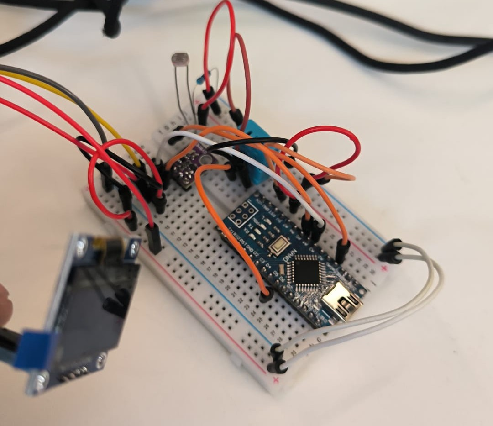
Prototype sur breadboard
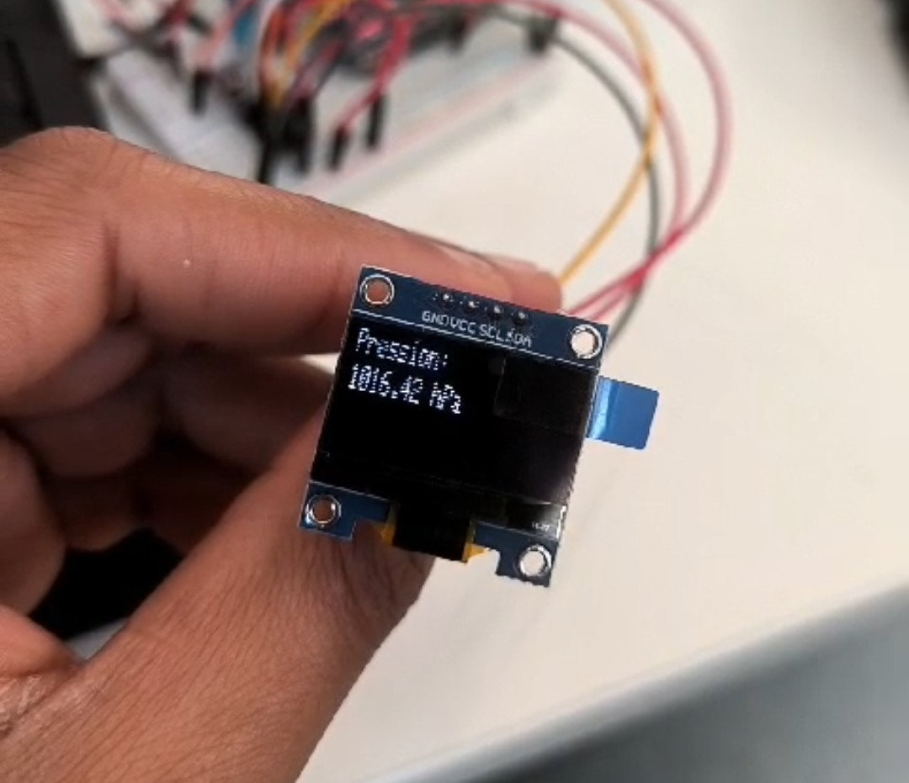
Pression atmosphérique sur l'écran OLED
Au départ, je n’étais pas censée porter le projet station météo.
C’était celui d’Edwinn, mais son absence m’a propulsée à un rôle inattendu : reprendre un projet technique et pédagogique en cours de route,
pour que les enfants puissent aller au bout de l’aventure.
Sur le moment, ça a été un vrai défi : il fallait rattraper la technique, comprendre le câblage, tester les cartes, ressouder certains éléments,
reprogrammer des modules… et même intégrer en cours de route un composant surprise : un écran OLED 🖥️.
Pas prévu du tout à l’origine, mais finalement super enrichissant (et un peu prise de tête au début 😅).
Pour tenir les délais, j’ai multiplié les créneaux : en plus des samedis, j’ai rajouté des séances le vendredi après-midi.
Record perso : 5 heures de câblage/soudure non-stop dans la même journée 🔥
(mes mains s’en souviennent encore). Heureusement, Karl (un camarade de promo en stage au même endroit) m’a rejointe mi-parcours :
lui sur les connecteurs, moi sur les cartes, on a fait équipe pour que tout soit prêt à temps.
Et franchement… ça valait le coup 🥹. Hier, lors de la dernière séance, voir les enfants récupérer leur station météo qui s’allumait,
mesurait la température et la lumière, et affichait les infos comme une vraie : un vrai moment de fierté.
Leurs sourires ont effacé toute la fatigue accumulée ✨.
Avec ce projet, j’ai gagné en :
autonomie et gestion d’imprévus (reprendre un projet qui n’était pas le mien au départ)
pédagogie (expliquer de manière simple un projet technique et garder le côté fun pour les enfants)
Bref, c’était mon premier vrai test d’investissement total, et une super expérience ! 💪
Petit teaser : le prochain article, c’est un nouveau projet que je vais réaliser moi-même… je vous en parle dans quelques semaines ! 😉
30 mars 2025
Mon projet : première séance
Ancien prototype opérationnel
Après avoir terminé le projet station météo, j’étais super excitée de gérer mon propre projet. (Un projet fait par un ancien employé, à reprendre)
Le concept ? Un avion miniature avec gyroscope, 4 LEDs, moteur et Arduino Pro Mini, le tout alimenté par une batterie avec BMS et un interrupteur.
La structure est faite en MDF 3 mm découpé à la découpe laser, et tout le câblage et les cartes sont soudés pour une meilleure efficacité 🔧.
Avant même la première séance, j’ai préparé tout le matériel pédagogique, il fallait que ce soit visuel et intéractif :
Une simulation Processing pour montrer le fonctionnement du projet avant même de manipuler le matériel.
Les enfants pouvaient visualiser en temps réel les interactions entre les composants et les réactions attendues.
Un PowerPoint pédagogique intégrant des petites vidéos (de MPeebody et Sherman) sur la machine volante de Léonard de Vinci.
L’idée était de faire un parallèle entre les concepts scientifiques et l’application concrète du projet.
Un mini-questionnaire ludique glissé dans le PowerPoint, avec un clin d’œil à Annonay, ma ville natale,
pour créer une interaction avec les enfants et capter leur attention dès le début.
Des feuilles pour permettre aux enfants de dessiner leur avion de rêve, qui serviront pour les prochaines séances.
Grâce à ces supports, les enfants ont pu comprendre le projet avant de manipuler le matériel et ont été très réceptifs.
Malgré mon absence ce jour-là car j’étais à l’ENSEIRB pour les régionales de la RoboCup 🤖, j’ai eu des retours de Karl et d’Edwinn,
et tout s’est parfaitement déroulé.
Cette première séance a été un vrai succès, et j’étais impatiente de rejoindre les enfants dès la séance suivante pour prendre pleinement en main mon projet.
12 avril 2025
De la responsabilité et de nouveaux défis 🌟
Carte électronique en cours de soudure
Cette semaine a été un gros cap dans mon stage : Edwinn est parti et… j’ai été nommée responsable des ateliers 😱.
Pour une stagiaire, c’est énorme ! J’avoue que j’étais à la fois hyper fière et un peu stressée :
c’est une vraie marque de confiance de la part de l’équipe, et ça m’a donné envie de me dépasser pour ne pas les décevoir.
On a continué sur la personnalisation et la modélisation 3D, mais l’ambiance a changé avec l’arrivée de nouvelles étapes beaucoup plus techniques : soudure et programmation.
Voir les jeunes prendre en main le fer à souder, tester des composants et ensuite écrire leurs premières lignes de code
(grâce à un petit texte à trous qui simplifiait la tâche), c’était génial.
On leur répétait souvent : « Pas de stress, si vous ne finissez pas, on s’en occupe. Vous repartirez avec votre projet terminé. »
Et rien que ça, ça en rassurait plus d’un.
Côté sécurité, on n’a rien laissé au hasard : plus de stagiaires pour encadrer, le directeur nous a accompagné aussi
et même la Biafine prête en cas de brûlure 🔥 (spoiler : personne n’en a eu besoin, ouf !).
Finalement, tout s’est super bien passé et les jeunes ont adoré manipuler, même ceux qui avaient un peu peur au début.
Le plus compliqué dans ces ateliers, c’est vraiment de jongler entre des profils très différents :
il y a ceux qui sont à fond bricolage et ceux qui préfèrent largement coder.
Trouver le bon équilibre, c’est un vrai défi… mais c’est aussi ce qui rend chaque séance unique et imprévisible.
Perso, c’est ça qui me motive à fond : je suis impatiente de voir comment ils vont réagir aux prochaines nouveautés !
10 mai 2025
BGF : Créativité et inclusion 🎭✨
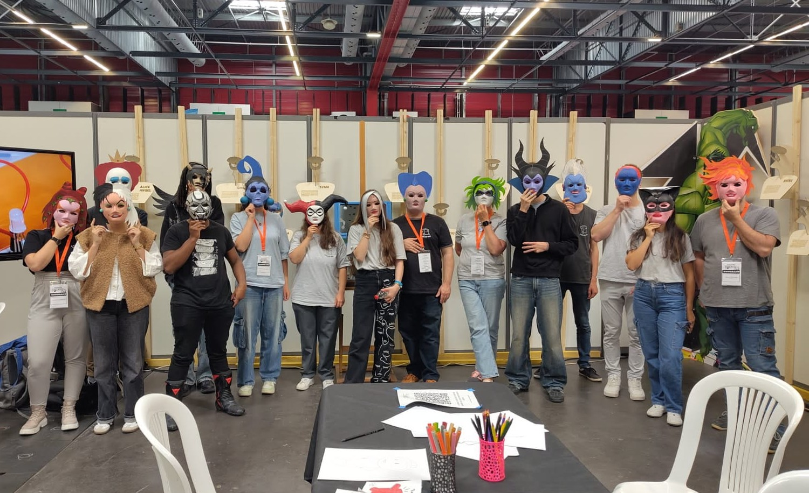
Une grande équipe masquée ! Bénévoles en action
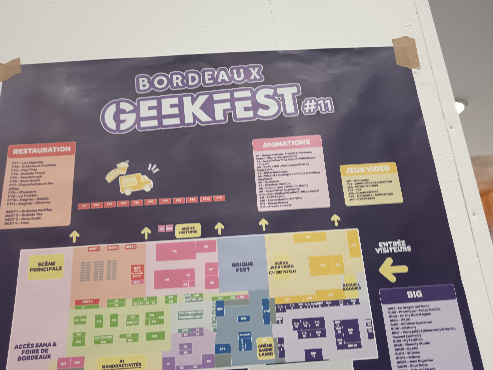
Petit plan du lieuTest des masques
Le BGF, c’était une ambiance totalement différente de l’univers habituel de la robotique 🤖 → ici, tout était artistique, coloré et rempli de surprises !
Entre les cosplayers et les stands originaux, j’ai vraiment eu l’impression d’entrer dans un autre monde.
L’installation 🔧🪛
Dès le 23, j’ai participé à l’installation du stand : montage des supports pour les masques, bricolage à la visseuse et quelques systèmes D pour que tout tienne bien.
Franchement, j’ai adoré ce côté concret et manuel : voir le stand prendre forme petit à petit, c’était hyper satisfaisant 🤩.
Les animations sur le stand 🎨🖍️
Sur notre espace, plusieurs ateliers se mélangeaient :
Des masques déjà réalisés par des élèves en art, que les visiteurs pouvaient essayer devant de grands miroirs 🪞 (énormes fous rires et beaucoup de photos souvenir 📸)
La Drawing Machine, qui dessinait en direct les motifs demandés par le public ✍️
Une Creality qui fabriquait des porte-clés prénoms 🔑
La FLSUN, cette énorme imprimante 3D que je n’avais encore jamais vue au FabLab, qui imprimait des objets déco (chat 🐱, Groot 🌱…)
Une table coloriage avec feutres et matériel pour personnaliser les dessins 🖍️
Et enfin, le grand écran iiyama, qui diffusait des vidéos et servait parfois à dupliquer les écrans lors de démonstrations de modélisation 3D 🎥💻
Une expérience marquante ✨
J’ai adoré représenter le FabLab dans ce cadre artistique, un peu éloigné de mes missions habituelles.
C’était concret, visuel et très interactif : voir les enfants et adultes s’émerveiller devant les machines donnait beaucoup de sens au projet 💡.
Et puis l’ambiance générale du parc des expositions avec la foire juste à côté rendait l’expérience encore plus vivante : un vrai grand événement à tous les niveaux 🎪.
En plus, il y avait cette ambiance cosplay que je découvrais pour la toute première fois :
des gens déguisés en persos d’anime, de jeux vidéo, de films… J’étais émerveillée, ça donnait une atmosphère magique ✨.
Quelques personnes qui ont rendu cette journée géniale :
Colin (bénévole)
Romane (stagiaire design, la reine de la déco du stand 🎨)
Johan (bénévole)
Ryan (employé)
Léo, Guilhem, Karl (stagiaires)
Sébastien (prof d’art, dont les élèves avaient conçu les masques)
Marc (directeur)
Ben (trésorière)
Morgane (alternante en communication)
Et sûrement de nombreux autres... (désolée de vous avoir oubliés)
25 mai 2025
Robocup : Inspiration et partage 🤖🏆
Logo Robocup
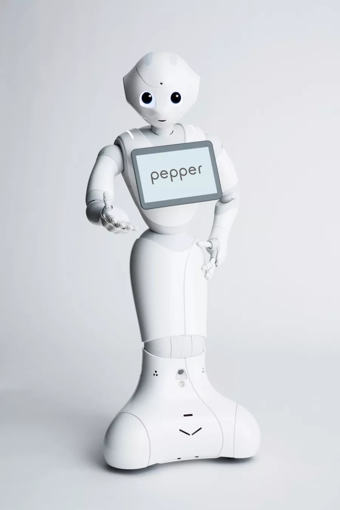
Robot Pepper (120cm)
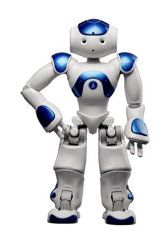
Robot Nao (58cm)
Aujourd’hui aux nationales de la Robocup, j’ai eu l’occasion de replonger dans une ambiance que je connaissais déjà un peu,
mais qui me surprend toujours. C’était ma deuxième fois à cet événement, et j’ai retrouvé à la fois le côté technique impressionnant…
et le côté humain qui donne vraiment toute sa valeur à l’expérience.
Avec moi, il y avait Marc (le directeur), Colin (bénévole) et Karl (stagiaire).
On a pu découvrir les projets des différentes équipes de la Robocup : des jeunes passionnés, qui passaient autant de temps à peaufiner leur robot
qu’à expliquer leurs démarches. Ce n’était pas seulement une compétition, mais surtout un lieu d’échange et de partage.
J’ai adoré discuter avec d’autres stagiaires et bénévoles de mon âge, comparer nos expériences et voir comment chacun vit son projet.
Ces échanges m’ont donné plein d’idées et une grosse dose de motivation 💪.
Et puis… coup de cœur total : juste à côté, il y avait les robots Pepper et Nao 🤖.
Les voir interagir en direct, c’était une vraie source d’inspiration et une occasion parfaite d’apprendre en observant.
Au-delà des rencontres pro, j’ai eu une belle surprise : retrouver Erika, une copine qui était elle aussi en stage sur l’événement.
Ça m’a rappelé plein de souvenirs de ma première Robocup, tout en me montrant à quel point j’ai progressé depuis.
Bref, entre inspiration, apprentissages et retrouvailles, cette journée avait tout pour marquer mon stage d’une pierre blanche.
1 juin 2025
Usinage 🪚✨
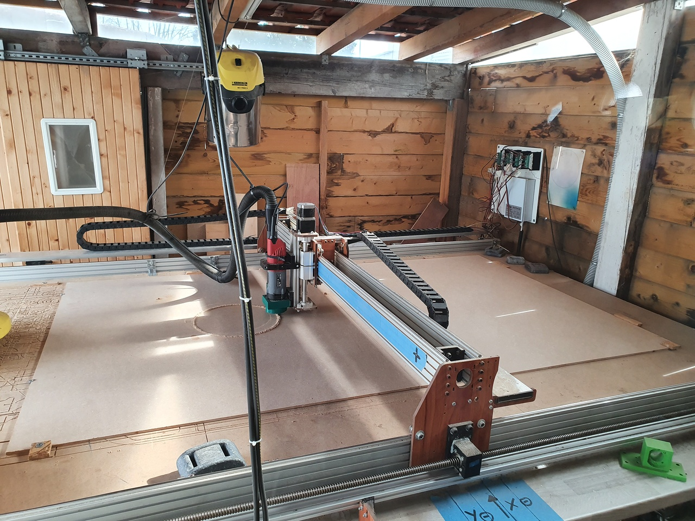
La machine
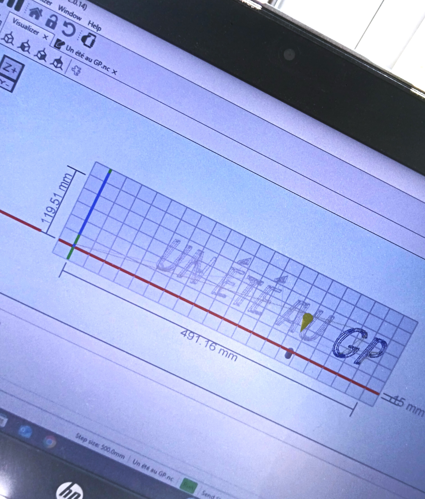
Le logicielLe résultat
Pour varier encore plus mes missions, me voilà à passer du mini à du maxi :
après la petite drawing machine, j’ai pris en main une CNC de menuiserie 🏗️ !
L’objectif ? Fabriquer des panneaux pour orienter les habitants et visiteurs sur les activités du quartier tout l’été 🌞🎉.
Même si la machine est impressionnante par sa taille, le pilotage reste exactement le même...
C’est dingue 🤯 : toutes ces machines parlent-elles vraiment le même langage, le fameux G-code ? 💻🔧
16 juin 2025
Répartir, coordonner… et laisser une trace 🛠️✨
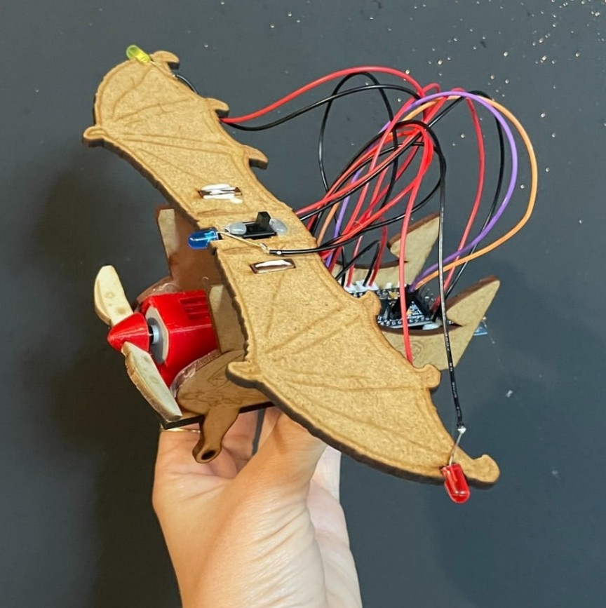
Avion terminé
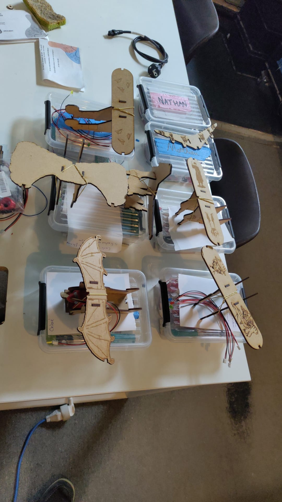
Prêts à recevoir les cartes !
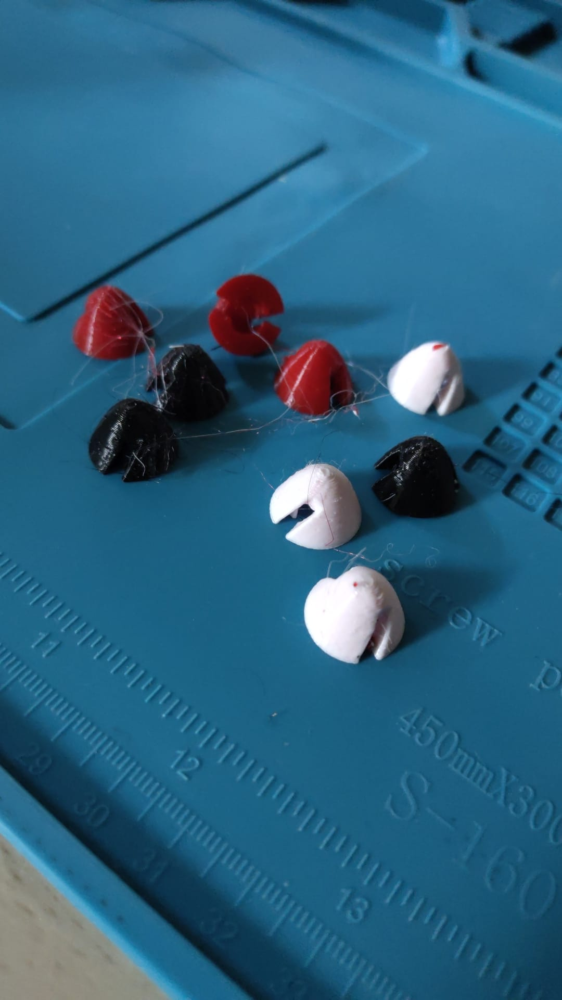
Nez, lien moteur-hélices
Pour mon dernier atelier, j’ai voulu pousser mon rôle encore un peu plus loin : répartir les tâches entre les différents stagiaires
pour que les enfants puissent découvrir toutes les étapes de la fabrication de leur avion.
C’était un vrai parcours du combattant niveau organisation 😅 !
Soudure des LED avec moi
Test des cartes avec Guilhem
Collage des supports et des hélices à la colle chaude avec Ryan
Découpe de la structure de l’avion avec Marc
Tout le monde avait son rôle, et ça a permis aux enfants de voir un peu de tout, tout en avançant efficacement sur leurs projets.
Avant de partir, j’ai laissé un prototype 100% fonctionnel. Chaque groupe pouvait continuer sans blocage et les enfants étaient assurés
de repartir avec leur avion terminé ✈️✨.
Au-delà de l’aspect technique, cette séance m’a appris à déléguer et à garder une vision d’ensemble du projet.
Voir chacun trouver sa place dans le processus a été hyper gratifiant.
Et parce que je suis pâtissière dans l’âme 🍪, j’avais préparé des cookies pour tout le monde afin de dire au revoir en beauté.
La grande surprise de la journée ? Mes parents, arrivés de Annonay en avance, sont venus me chercher au FabLab.
Moment d’émotion intense 💖 : leur montrer mon travail dont j’étais fière et leur faire découvrir ma vie ici à Bordeaux,
c’était comme une rencontre entre deux mondes.
28 juin 2025
Clap de fin 🎬
Mon stage touche à sa fin, et c’est le moment de faire un petit bilan !
D’un point de vue professionnel, j’ai énormément appris :
Approfondissement des logiciels de modélisation 3D (Rhinoceros, Tinkercad, Inkscape, Cura, etc.)
Compréhension et mise en pratique des étapes d’un projet complet : de l’idée 💡 au prototype ⚙️, en passant par les ajustements techniques
Découverte (et pratique !) de la soudure et de la programmation, des domaines qui m’étaient quasiment inconnus au départ
Capacité à encadrer et à expliquer des notions parfois complexes à des publics très différents
Sur le plan social et humain, ce stage m’a aussi beaucoup apporté :
Travailler en équipe, m’intégrer dans un environnement où circulent autant de profils (employés, bénévoles, stagiaires, jeunes, visiteurs)
Prendre des responsabilités, notamment en étant désignée pour gérer certains ateliers en autonomie
Apprendre à m’adapter à des groupes variés : enfants, ados, adultes, chacun avec ses besoins, son rythme et son enthousiasme
Au final, je retiens surtout la fierté d’avoir contribué à un projet concret ✈️, et d’avoir vu les Makers Jr avancer pas à pas jusqu’à leur réalisation.
Les sourires, les idées farfelues, les réussites et même les petites galères resteront des souvenirs précieux.
Un grand merci à l’équipe du FabLab Bordeaux École Numérique pour l’accueil, la confiance et le soutien 🤝.
Ce stage m’a confortée dans mon envie de poursuivre dans cette voie, où créativité et technique se rencontrent chaque jour.
👉 Prochaine étape : continuer à développer mes compétences, garder cette curiosité et ne jamais oublier qu’apprendre peut (et doit) aussi être ludique !